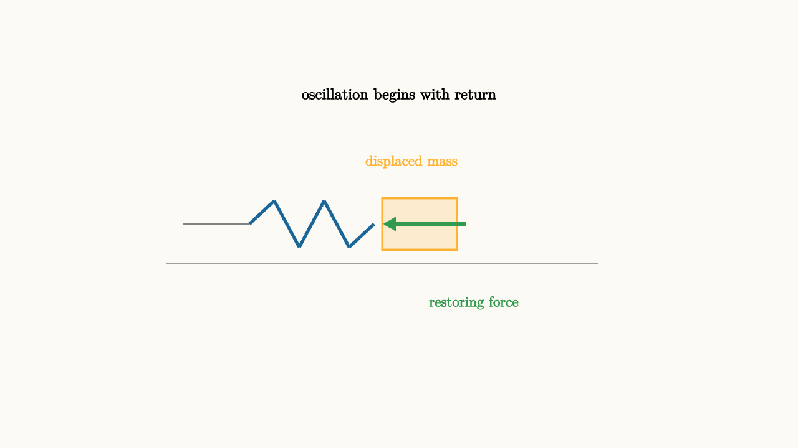

Oscillations Are Energy Trading Places
Pull a mass on a spring and let go. It rushes through the middle, slows near the other side, turns around, and repeats. A playground swing does the same kind of dance. At the top it pauses with stored gravitational energy. At the bottom it moves fastest with kinetic energy.
Oscillation is the physics of return. Something is displaced from equilibrium. A restoring force points it back. In the simplest spring model, Hooke's law says
The displacement $x$ is measured from equilibrium. The minus sign says the force points back toward the center. A bigger stretch gives a stronger restoring force.
Newton's second law turns that force into an equation of motion:
The solutions are sines and cosines:
where
The amplitude $A$ sets how far the motion reaches. The phase $\phi$ sets where the clock starts. The angular frequency $\omega$ sets how quickly the pattern repeats.

source
background = [0.985, 0.98, 0.955, 1]
camera = Camera(4.8b)
mesh diagram = block {
. stroke{GRAY, 2} Line(start: [-2.6, 0, 0], end: [-1.8, 0, 0])
. stroke{BLUE, 3} Line(start: [-1.8, 0, 0], end: [-1.5, 0.28, 0])
. stroke{BLUE, 3} Line(start: [-1.5, 0.28, 0], end: [-1.2, -0.28, 0])
. stroke{BLUE, 3} Line(start: [-1.2, -0.28, 0], end: [-0.9, 0.28, 0])
. stroke{BLUE, 3} Line(start: [-0.9, 0.28, 0], end: [-0.6, -0.28, 0])
. stroke{BLUE, 3} Line(start: [-0.6, -0.28, 0], end: [-0.3, 0, 0])
. fill{alpha{0.2} ORANGE} stroke{ORANGE, 2} center{[0.25, 0, 0]} Rect([0.9, 0.62])
. stroke{GRAY, 1} Line(start: [-2.8, -0.48, 0], end: [2.4, -0.48, 0])
. color{GREEN} Arrow(start: [0.8, 0, 0], end: [-0.18, 0, 0])
. center{[0.15, 0.75, 0]} color{ORANGE} Text("displaced mass", 0.62)
. center{[0.9, -0.95, 0]} color{GREEN} Text("restoring force", 0.62)
. center{[0, 1.55, 0]} Text("oscillation begins with return", 0.66)
}
"spring return"
play Fade(0.6)The force is largest at the ends because the spring is stretched or compressed most there. The force is zero at equilibrium, yet the mass is usually moving fastest at that point. That one sentence is the heart of oscillation.
Energy trades places
The spring stores potential energy
The moving mass has kinetic energy
In an ideal mass-spring system with no friction, the total
stays constant. At maximum stretch, the velocity is zero and the energy is stored in the spring. At equilibrium, the spring energy is zero and the speed is maximum. The energy moves between two accounts while the total stays fixed.
This is why the motion repeats. The system never runs out of energy in the ideal model. It also never escapes because the restoring force keeps turning motion back toward equilibrium.
source
param phase = 0.0
background = [0.985, 0.98, 0.955, 1]
camera = Camera(4.8b)
let Oscillator = |phase| block {
let x = 1.15 * cos(TAU * phase)
let spring_energy = 0.2 + 1.1 * cos(TAU * phase) * cos(TAU * phase)
let kinetic_energy = 0.2 + 1.1 * sin(TAU * phase) * sin(TAU * phase)
. stroke{GRAY, 2} Line(start: [-2.45, 0, 0], end: [x - 0.55, 0, 0])
. fill{alpha{0.22} ORANGE} stroke{ORANGE, 2} center{[x, 0, 0]} Rect([0.75, 0.55])
. stroke{GRAY, 1} Line(start: [-2.65, -0.45, 0], end: [2.25, -0.45, 0])
. stroke{DARK_GRAY, 1} Line(start: [0, -0.75, 0], end: [0, 0.75, 0])
. fill{alpha{0.22} GREEN} stroke{GREEN, 2} center{[2.35, -0.9 + spring_energy / 2, 0]} Rect([0.35, spring_energy])
. fill{alpha{0.22} BLUE} stroke{BLUE, 2} center{[2.85, -0.9 + kinetic_energy / 2, 0]} Rect([0.35, kinetic_energy])
. center{[2.35, 0.88, 0]} color{GREEN} Text("U", 0.72)
. center{[2.85, 0.88, 0]} color{BLUE} Text("K", 0.72)
}
"start stretched"
mesh title = center{[0, 1.6, 0]} Text("energy trades places every quarter cycle", 0.62)
mesh scene = Oscillator(phase: $phase)
play Write(0.8)
"rush through equilibrium"
phase = 0.25
scene = Oscillator(phase: $phase)
play Lerp(1.1)
"store on the other side"
phase = 0.5
scene = Oscillator(phase: $phase)
play Lerp(1.1)
"become a timing graph"
scene = block {
. stroke{GRAY, 1} Line(start: [-2.4, -0.8, 0], end: [2.4, -0.8, 0])
. stroke{GREEN, 4} ExplicitFunc(|t| 0.45 * cos(3 * t) * cos(3 * t), [-2.1, 2.1, 160])
. stroke{BLUE, 4} ExplicitFunc(|t| 0.45 * sin(3 * t) * sin(3 * t) - 0.72, [-2.1, 2.1, 160])
. center{[-1.45, 0.75, 0]} color{GREEN} Text("spring energy", 0.62)
. center{[1.3, -1.25, 0]} color{BLUE} Text("kinetic energy", 0.62)
}
play Trans(1.0)The bars make a common surprise visible. The restoring force is strongest at the ends, while kinetic energy is greatest in the middle. Force explains the next change. Energy explains the whole cycle.
Period comes from inertia and stiffness
The period of a mass on a spring is
Large mass increases the period because inertia makes the motion harder to turn around. Large spring constant decreases the period because a stiff spring pulls back more strongly.
Notice what is missing from the ideal formula: amplitude. A larger ideal spring oscillation travels farther and moves faster, so the period stays the same. Real springs eventually leave the ideal range, but the model explains why small vibrations often have steady musical pitch.
Pendulums hide a spring-like equation
A small-angle pendulum also oscillates. If the angle from vertical is $\theta$, gravity supplies a restoring torque. For small angles, $\sin\theta\approx\theta$, and the equation becomes
That has the same shape as the spring equation. Its angular frequency is
and its period is
Longer pendulums swing more slowly. Stronger gravity makes them swing faster.
Damping and resonance
Real oscillators lose mechanical energy. Air resistance, internal friction, and sound carry energy away. This is damping. The amplitude shrinks while the system may still pass through the same sequence of positions.
A driven oscillator receives energy from outside. Push a swing at the right rhythm and the amplitude grows. This is resonance. The driving frequency lines up with the oscillator's natural frequency, so each push arrives with the motion rather than fighting it.
Resonance can be useful in clocks, musical instruments, radios, and sensors. It can be dangerous in bridges, buildings, and machines. The same idea governs both: timing decides whether energy transfer accumulates or cancels over cycles.
The lesson to keep
Oscillation is return plus inertia. The restoring force points toward equilibrium. Inertia carries the system through equilibrium. Energy moves between kinetic energy and stored configuration.
When you see a repeating motion, look for the equilibrium, the restoring force, and the energy stores. If the restoring force is proportional to displacement, the motion becomes sinusoidal. If damping or driving enters, the story grows richer, but the core remains the same: repeated motion is energy trading places on a schedule set by the system.